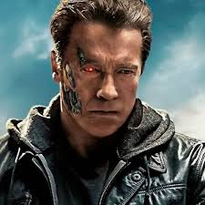

X


_(cropped).jpg)
Arnold Schwarzenegger is an Austrian-American actor, politician, and former professional bodybuilder. He was born on July 30, 1947, in Thal, Austria.
Schwarzenegger began weight training at a young age and excelled in bodybuilding competitions. He won the Mr. Universe title at age 20 and went on to win the Mr. Olympia contest seven times, establishing himself as one of the greatest bodybuilders of all time.
In the 1980s, Schwarzenegger transitioned to acting and quickly became a Hollywood superstar. He starred in blockbuster films such as "The Terminator," "Predator," and "Total Recall," solidifying his status as an action movie icon.
Beyond his successful acting career, Schwarzenegger ventured into politics and served as the Governor of California from 2003 to 2011. During his tenure, he focused on issues such as environmental protection, infrastructure development, and economic reform.
Schwarzenegger is also known for his philanthropic work, particularly in the areas of children's health and fitness education. He founded the Arnold Sports Festival, an annual multi-sport event, and has been actively involved in various charitable organizations.
Web 1.0: Read-only, static web pages with content
created by website owners/publishers. Very little user interaction.
Web 2.0: Read-write web with user-generated content,
social media, blogs, wikis, etc. Enabled participatory and interactive
web.
Web 3.0: Read-write-execute web focused on
integrating data from different sources using semantic technologies.
Aimed for intelligent content understanding by machines.
Web 1.0: Focus was on making information and content
available online for people to access and read. Companies published
content for users to consume.
Web 2.0: Focus shifted to facilitating communication,
sharing, and user-generated content creation. Companies built
platforms that enabled users to publish content for others.
Web 3.0: Integration and connection of data from
different sources to provide more intelligent searching, processing,
and analysis capabilities. Move towards a web of knowledge and data
rather than just documents.
Web 1.0: Used basic HTML for creating static web
pages.
Web 2.0: Introduced technologies like XML, RSS feeds,
AJAX for more interactive and dynamic web applications.
Web 3.0: Utilizes formats like RDF (Resource
Description Framework) and OWL (Web Ontology Language) to represent
data in a machine-readable way to enable better integration,
searching, and inferencing.